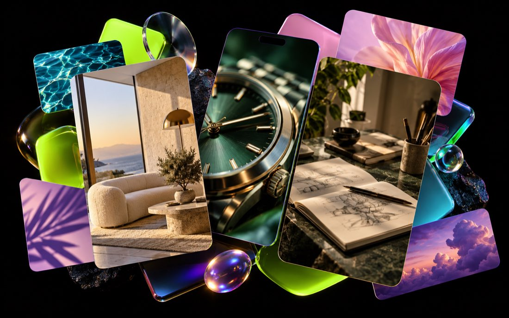

小红书点点 AI 搜索优化实验
2026 · 2.5 周针对企业客户希望在行业推荐词与选购问题中被点点 AI 提及的需求，分析目标词、竞品和现有信源，制作并发布匹配主题的内容，再按固定规则复测。
10 / 10目标词全部上榜
40–100%各词设备上榜率
¥39平均内容成本 / 词
投入 26 篇笔记，覆盖 10 个关键词；其中两个词达到 10 台设备全收录。结果来自项目登记与阶段验证，展示时以具体关键词和截图证据为准。
围绕真实的客户问题做内容，让品牌出现在小红书搜索与点点 AI 回答中，带来可以验证的咨询。
小红书点点 AI 搜索优化 / GEO 业务获客 / 企业内容代运营
持续内容获客，数量为简历统计约数。
用于衡量咨询质量，与月均人数的统计周期不同。
企业内容代运营项目的持续合作结果。
先看结果，再看我是怎么完成、怎样验证，以及哪些方法可以复用。
基于关键词和已有信源规划内容，以固定账号与设备做重复验证，确认品牌出现不是一次性的截图结果。
负责公司 GEO 业务的获客运营，围绕潜在客户的问题持续选题、生产内容、发布和复盘。
服务高端腕表、高端全屋定制、香港求职培训等企业客户。独立完成需求拆解、brief、KOC 建联、稿件审核、发布跟踪与数据回收。累计产出 160 篇 KOC / 素人笔记；腕表项目续约 5 个周期，家装项目续约 2 轮。

概念视觉 · 客户资料已匿名处理把“发了多少篇”还原成一条可核验的因果链：目标词、内容部署、平台回答、设备复测和复盘资产。
针对企业客户希望在行业推荐词与选购问题中被点点 AI 提及的需求，分析目标词、竞品和现有信源，制作并发布匹配主题的内容，再按固定规则复测。
投入 26 篇笔记，覆盖 10 个关键词；其中两个词达到 10 台设备全收录。结果来自项目登记与阶段验证，展示时以具体关键词和截图证据为准。
先筛选竞争度和用户意图，再拆分相近词簇；以自我介绍、产品事实和场景内容补足可被引用的信源。发布后留出收录时间，使用多个账号和设备重复测试，把截图与信源登记留档。
可复用资产：四步执行 SOP、内容登记表、收录验证流程、复测标准与结果截图证据链。
获客内容的评价标准是有没有带来合适的对话，以及对话能不能有效进入下一步。
围绕潜在客户会搜索的问题制定选题，运营企业主账号，负责内容撰写与图文 / 短视频制作，发布后根据进线和加微信数据调整内容主题、表达方式和承接路径。
可复用经验：先从客户问题出发组织内容，再用有效咨询而非单篇曝光判断内容质量。月均数量为约数；有效率按简历累计数据口径。
服务其他企业做内容代运营，把项目交付拆成客户能确认、执行中能追踪、结束后能复盘的具体环节。
从客户 brief 和传播目标开始，研究行业与产品卖点，匹配并建联创作者，独立推进选题 brief、稿件审核修改、发布时间管理、发布检查和数据回收。服务对象涵盖国际高端腕表、高端全屋定制与香港求职培训等项目。
腕表客户结案文件含保密标记，公开版仅展示匿名化项目摘要。具体品牌名称、客户素材和内部报告不在本页公开。
从艺术教学到社群运营，再到 GEO 获客和企业内容代运营。我关注用户为什么搜索、什么信息能解决问题，以及内容最后有没有带来有效结果。
负责 GEO 业务获客运营、小红书点点 AI 搜索优化及多行业企业内容代运营。
围绕用户生命周期和转化数据迭代运营策略，平均转化率 8%，入职第二个月总产达到公司 TOP3。
独立维护 80–100 个家庭的长期关系，年均续费超过 85%；将用户心理洞察用于沟通和服务。
大专，学习美术教育、心理学与教育学。